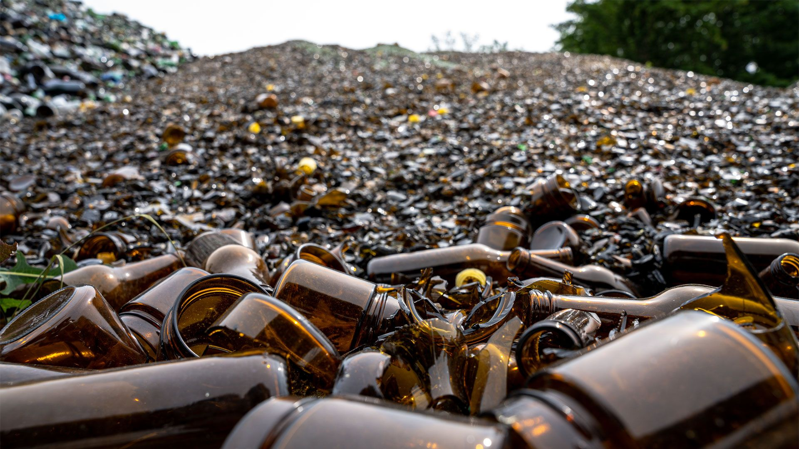

VOM ALTGLAS ZUM BAUSTOFF
Ein Material.
Ein neues Leben.
Wir geben gebrauchtem Glas eine neue Aufgabe: als leichter, wärmedämmender Baustoff. Produziert in Krummnußbaum an der Donau.

der technischen Datenblätter
laut Policell
des Unternehmens
WEITERDENKEN STATT WEGWERFEN
Aus vorhandenem
Material wird Zukunft.
Die Nutzung von Altglas ist der Ausgangspunkt. Die Verarbeitung macht daraus Schaumglasschotter für neue Bauaufgaben.
Die Herstellung erfolgt laut Policell ohne Gas und mit Strom aus ökologischen Quellen.
NACHVOLLZIEHBAR PLANEN
Konkrete Angaben.
Klare Unterlagen.
Materialzusammensetzung und technische Eigenschaften sind in den Produktdatenblättern dokumentiert. Angaben zum Energieeinsatz stammen aus der Nachhaltigkeitsbeschreibung des Unternehmens.
Für Ihr Projekt stehen die Original-Datenblätter und die aktuelle Europäische Technische Bewertung zum Download bereit.
Technische UnterlagenIHR PROJEKT BEGINNT MIT EINEM GESPRÄCH.
Was haben
Sie vor?
Materialwahl, technische Beratung oder Lieferung:
Wir freuen uns auf Ihr Vorhaben.